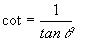

Descripción:
- Desarrollarán los algoritmos y
programas de algunos problemas que implican el uso de funciones.

Objetivos:
- Aplicar los conocimientos
sobre funciones.
- Reconocer la importancia del
uso de funciones para el diseño de un programa, al experimentar las
ventajas de la programación modular y la reutilización de código.
- Ejercitar la habilidad de
hacer frente a los mensajes de error que envía la herramienta de
desarrollo.
- Desarrollar habilidades de
sociabilización mediante el proceso de trabajo en equipo.
- Ayudar a tus compañeros a
encontrar la mejor solución a los programas.

Modalidad y forma de trabajo: Diseño colaborativo, implementación
individual.
- Intégrate con tu equipo colaborativo y sigue las indicaciones
del profesor.
- Junto con tus compañeros de equipo, analiza cada uno de
los ejercicios que se presentan a continuación.
- Identifiquen, en
equipo, cual sería el algoritmo para la solución de cada uno
de los ejercicios. Recuerden documentarlos en sus hojas membretadas.
- De manera individual escribe un programa en
Python para cada uno de
los ejercicios. Recuerda basarte en el algoritmo que se generó en
el equipo.
- Una vez que hayas terminado tus programas,
apoya a tus compañeros de equipo con las dudas que tengan (no hagas el
laboratorio por ellos ya que esto sólo los perjudica).
- Entrega por Canvas, los archivos *.py que
contengan los programas en Python.

Instrucciones:
Ejercicio 1.
Implementa las siguientes funciones, recuerda que las funciones se
definen antes de la codificación del script principal.
Ejercicio 2.
En otro archivo, implemente las siguientes funciones:
- La
función gradosRadianes,
que recibe una cantidad en grados y regresa su equivalencia en
radianes.
.

.
El
encabezado de la función, podría ser el siguiente:
float
gradosRadianes (grados):
- La
función secanteCuadrada,
que recibe un ángulo en grados y regresa la secante cuadrada de
dicho ángulo.

El
encabezado de la función, podría ser el siguiente:
def
secanteCuadrada (grados):
Utiliza
la función math.tan(x) de la librería math.h, que calcula
la tangente del ángulo x especificado en radianes, por lo tanto,
para poder usar esta función, es necesario primero transformar el
ángulo en grados a radianes, para ello utiliza la función
gradosRadianes implementada anteriormente. Como puedes ver, es
posible utilizar una función dentro de otra función. La única
condición que demanda el compilador, es que la función a utilizar
dentro, haya sido definida anteriormente.
- La
función cotangente,
que recibe un ángulo en grados y regresa la cotangente de dicho
ángulo.
..

El
encabezado de la función, podría ser el siguiente:
def
cotangente (grados):
Utiliza
la función math.tan(x) de la librería math.h, que calcula
la tangente del ángulo x especificado en radianes, por lo tanto
para poder usar esta función, es necesario primero transformar el
ángulo en grados a radianes como en la función anterior.
- La
función identidades,
que despliegue el siguiente menú en pantalla:
IDENTIDADES TRIGONOMETRICAS
1.
Secante
2.
Cotangente
3. Salir
- En
la sección del "script
principal"
construya un programa completo en Python que utilice la función
identidades y de acuerdo a la opción seleccionada por el
usuario utilice la función apropiada de las implementadas
anteriormente, para calcular la identidad trigonométrica elegida.
Utiliza el estatuto de control if.
-
Guardar este archivo con el nombre:
D2_Matricula.py

Recursos:
Jerarquía de Operadores: Aritméticos,
relacionales y lógicos:
4.
JerarquiaOperadores
Estructura condicional IF:
5. Condicionales
Funciones: 6.
Funciones

Forma de
entrega:
Algoritmos colaborativos:
Se colocan en sus fólders colaborativos.
Programas individuales:
- Envía tus archivos por
Canvas, no se aceptarán
laboratorios por ningún otro medio.
-
Envía solo tus archivos *.py.
-
Los archivos enviados posteriormente a la fecha límite
no serán calificados.
.
Instrucciones para enviar tu laboratorio por Canvas
- Haz clic en el
botón de Tareas.
- Haz clic en la actividad
de EntregaLabFunciones.
- Haz clic en el botón de
Entregar tarea.
- En el fólder de
Carga del archivo, haz clic en el botón de
Examinar y localiza el archivo *.py. Si necesitas agregar
más archivos, haz clic en + Agregue otro archivo,
haz clic en el botón de Examinar y localiza el
otro archivo *.py.
- Cuando hayas terminado
de subir tus archivos, haz clic en el botón de Entregar
tarea y listo!!!
|